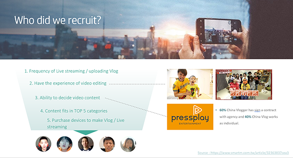
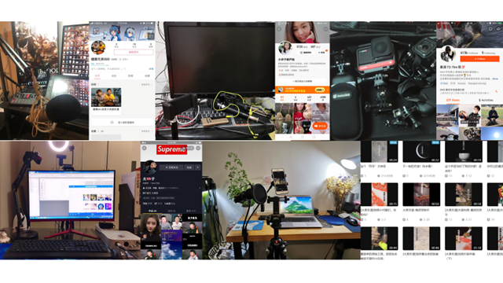
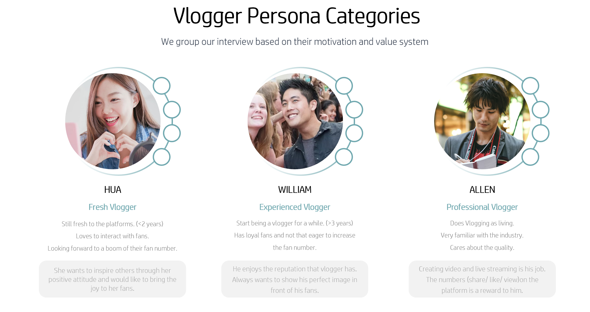
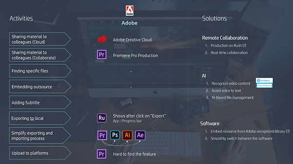

Creator Behavior on Laptop
Youtuber and Vlogger have become the most attractive jobs for children in these years. Their needs on upgrading the equipment are really solid. We targeted this group of people and wanted to design a laptop that provides the best experience when they are editing video and live streaming.
I am the user researcher on this project and successfully bring out persona and user journey to make the product core team have a strong foundation to take the next step on acquisition with the portfolio point of view.
— UX Researcher
- Secondary Research
- In-depth interview
- Persona
- Scenarios & Storyboards
- Experience Curation
- Partnership Engagement
Approach

Step 1. Secondary research
The product targeted two different markets : North America and Great China. Product strategy team thinks that the post potential content creator market would lean on China. Vlogger behavior can separate into two parts : video editing and live streaming. Therefore, we should understand the platform on which Chinese vloggers put their video and start livestreaming on.

Step 2. User Interview
In order to recruit vloggers with good representation, we set the followers number as the main screen criteria. This segment does work. After really talking with them, we found the alignment on their comments and mindset that have a high correlation with the followers number.

Step 3. Research result and rescommendations
With the raw data from user research, we used the mind map to categorize interviewees into three different persona and brought out the motivation of doing vlog and limitation on current device set up. We also defined the hero experiences and pointed out the opportunities that we could make an effort on building partnership with other companies.

Step 4. Partner engagement
Based on the hero experiences, we evaluated the solution providers in the market and engaged with them to see the possibility of partnership. We talked with Canon to fine tune the file transfer experience and with Adobe to match their road map plan on Premiere to our product development cycle.